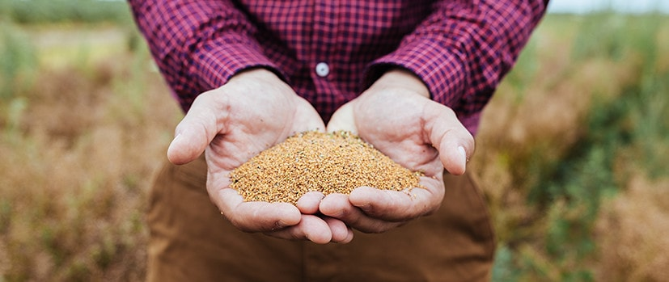

KYNNING & SKULDBINDINGAR

Finndu bestu náttúrulegu eiginleika hársins þíns.
Botanicals Freshcare er vinnustofa sem helgar sig framleiðslu á ríkulegum hárvörum innblásnum af
innihaldsefnum Botanicals Freshcare.
Í hverju skrefi í þróuninni og framleiðslunni setur hver skapari, ræktandi, garðyrkjufræðingur og
efnafræðingur ástríðu sína og sérfræðiþekkingu í að setja saman bestu vörurnar fyrir Botanicals Freshcare.
Við sköpuðum hágæða formúlu með einstakri áferð og ilmi, lausa við sílíkon, parabena og litarefni.
Við helgum okkur betri sjálfbærni, samvinnu og samfélagi.
Leit okkar að betri innihaldsefnum frá náttúrunnar hendi, meiri sjálfbærni í framleiðslu og yndislegri
áferð, hjálpaði okkur að finna nýja leið til að gera hár fallegt. Og munum ekki hætta að leita. Vegna þess
að við trúum því að hvert skref sé vegferð, við höfum öll tækifæri til að finna okkar bestu leið að
náttúrunni.